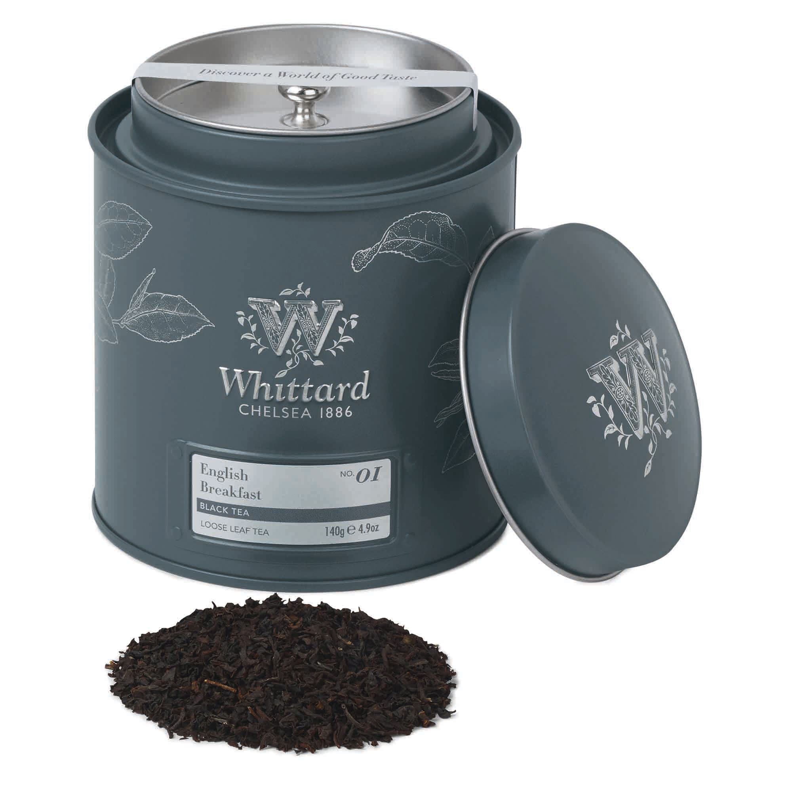
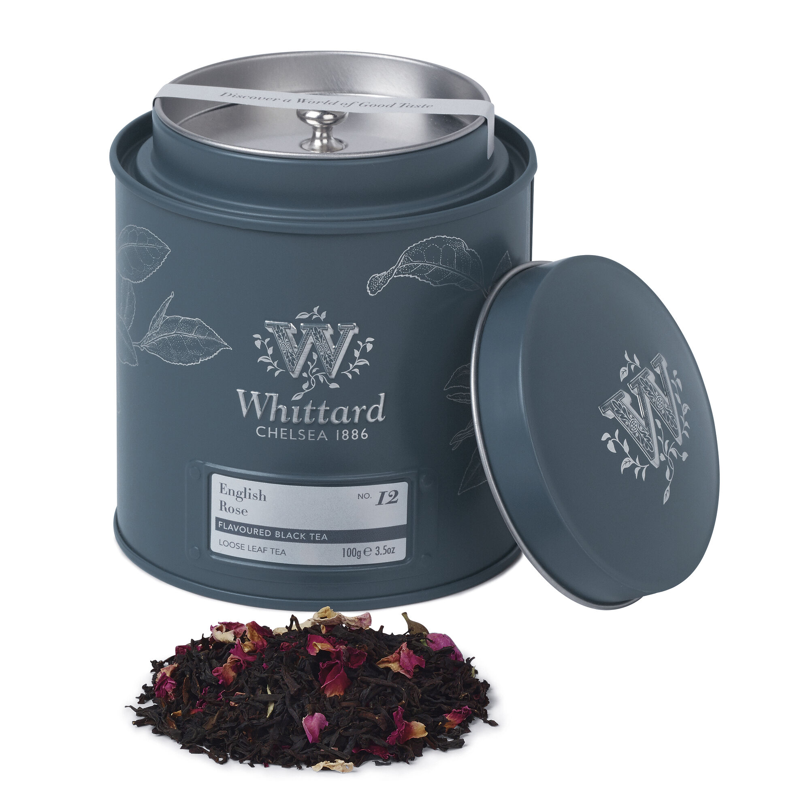
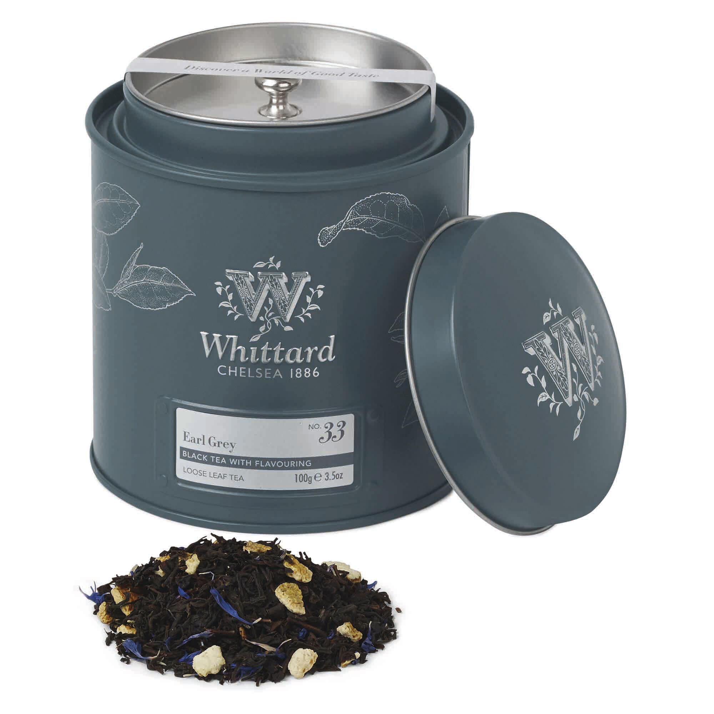

BLACK TEA
Black tea is the most common type of tea accounting for up to 85% of total tea consumption in the western world. Black tea is fully oxidised and has darker appearance, stronger flavour and higher caffeine content compared to other teas.
In our offer you can try not only classic black tea but also flavoured one. So try them all!!!

ENGLISH BREAKSFAST

ENGLISH ROSE CADDY
